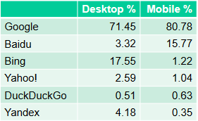

A web search engine is a software system designed to carry out web searches. They search the World Wide Web in a systematic way for particular information specified in a textual web search query. The search results are generally presented in a line of results, often referred to as search engine results pages (SERPs). When a user enters a query into a search engine, the engine scans its index of web pages to find those that are relevant to the user's query. The results are then ranked by relevancy and displayed to the user. The information may be a mix of links to web pages, images, videos, infographics, articles, research papers, and other types of files. Some search engines also mine data available in databases or open directories. Unlike web directories and social bookmarking sites, which are maintained by human editors, search engines also maintain real-time information by running an algorithm on a web crawler. Any internet-based content that cannot be indexed and searched by a web search engine falls under the category of deep web.[Wikipedia]
Web search engines and some other websites use Web crawling or spidering software to update their web content or indices of other sites' web content. Web crawlers copy pages for processing by a search engine, which indexes the downloaded pages so that users can search more efficiently.
Crawlers consume resources on visited systems and often visit sites unprompted. Issues of schedule, load, and "politeness" come into play when large collections of pages are accessed. Mechanisms exist for public sites not wishing to be crawled to make this known to the crawling agent. For example, including a robots.txt file can request bots to index only parts of a website, or nothing at all.
The number of Internet pages is extremely large; even the largest crawlers fall short of making a complete index. For this reason, search engines struggled to give relevant search results in the early years of the World Wide Web, before 2000. Today, relevant results are given almost instantly.
There is no public list of the seed sites, but we can guess
Links from so called restricted domains are generally more trusted
Links from a variety of domains and locations, diversified media (social media, news sites, reviews, directories, blogs, articles), link texts, authors, publishers. Diversity fosters trust and hereby is a very strong relevance indicator